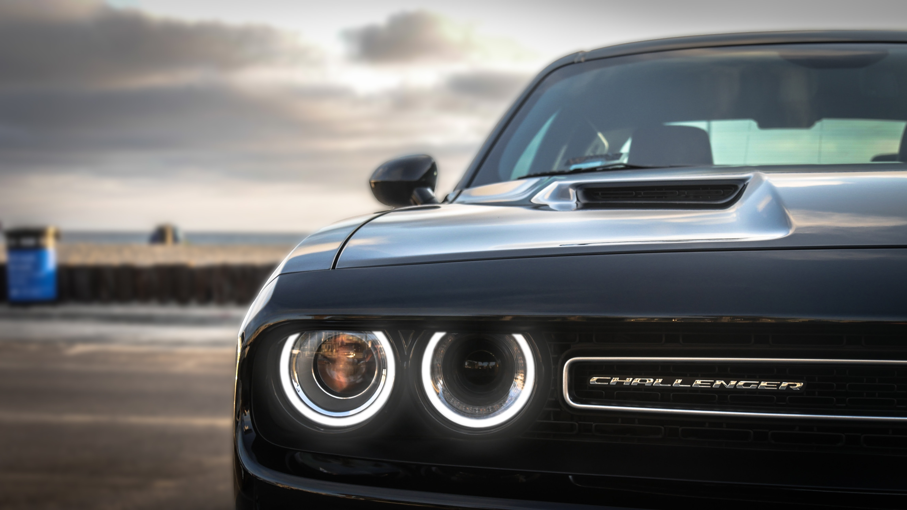

Muscles car
MUSTANG
CAMARO
DODGE
DODGE
미국의 존 프랜시스 닷지(John Francis Dodge)와
호레이스 엘진 닷지(Horace Elgin Dodge) 형제가 1913년에 설립한 자동차 회사.
특유의 십자 그릴이 유명하다. 1928년 월터 크라이슬러가 인수하여
현재 크라이슬러 산하의 브랜드가 되었다. 당시에도 상당한 성능을 보여주었다 